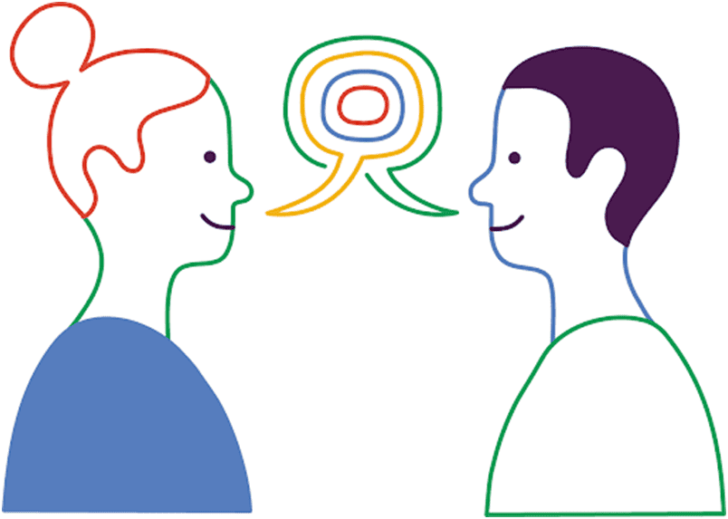
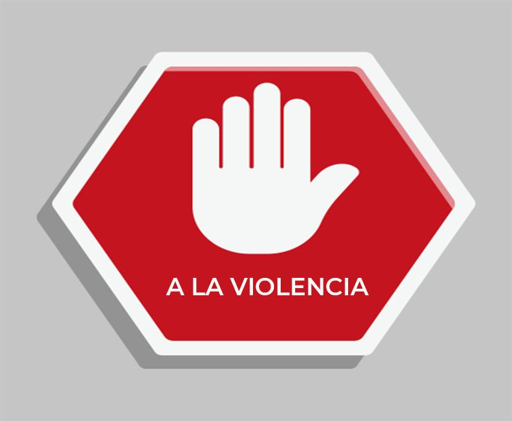
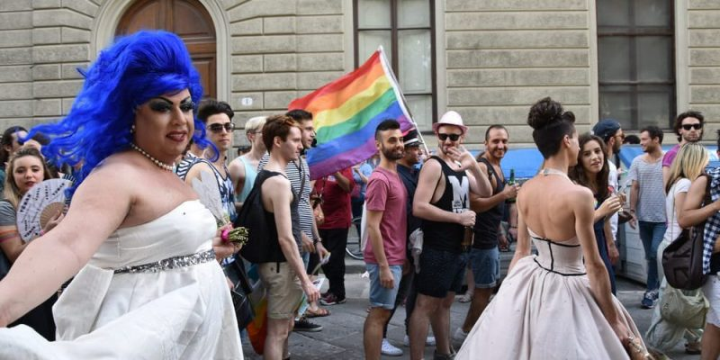
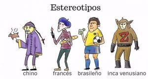

INGLES TERCER PERIODO
Actividad Periodo 3
1.
a: 6 Simple principles to build peace in your community
If you switch on the TV news, open the newspaper or click
onto a popular news website, there’s always news about a
terrorist attack, war, ongoing conflict and a general lack of
peace amongst different groups of people. In an
increasingly globalised world, we should understand each
other better, stand ever more united and strive for peace.
Sadly, the truth is quite the opposite. There’s conflict in
Israel/Palestine, Kashmir, Iraq, Afghanistan, Syria, all over
the world in fact…
As individuals and citizens, how do we deal with this? How
does this relate to us? How can we make positive changes
to enable us to live in peace?
Traduccion:
6 principios simples para construir la paz en tu comunidad
Si enciende las noticias de la televisión, abra el periódico o haga clic en
en un sitio web de noticias popular, siempre hay noticias sobre un
ataque terrorista, guerra, conflicto en curso y una falta general de
paz entre diferentes grupos de personas. en un
mundo cada vez más globalizado, debemos entendernos
otros mejores, permanezcamos cada vez más unidos y luchemos por la paz.
Lamentablemente, la verdad es todo lo contrario. Hay conflicto en
Israel/Palestina, Cachemira, Irak, Afganistán, Siria, en todas partes
el mundo de hecho...
Como individuos y ciudadanos, ¿cómo afrontamos esto? Cómo
¿Esto se relaciona con nosotros? ¿Cómo podemos hacer cambios positivos?
para permitirnos vivir en paz?
B: RULE #1: TREAT OTHERS THE
WAY YOU WISH TO BE TREATED
The good old Golden Rule says it all:
empathy, tolerance and peace. This
principle teaches you to love yourself
and love others. It spans cultures and
faiths and is a universal age old
concept which can’t fail!
Traduccion:
REGLA #1: TRATAR A LOS DEMÁS
MANERA EN QUE DESEA SER TRATADO
La vieja regla de oro lo dice todo:
empatía, tolerancia y paz. Este
El principio te enseña a amarte a ti mismo.
y amar a los demás. Abarca culturas y
religiones y es una edad universal
¡Concepto que no puede fallar!
c: RULE #2: LISTEN TO HEAR WHAT OTHERS HAVE TO SAY,
NOT TO SPEAK
Engage in dialogue with an open mind and the real will to listen to
others. Only then will you be able to understand each other and
build bridges. Change cannot happen and peace cannot be
established if people are unable to communicate with others; to
listen to their experiences and views and show empathy,
understanding and compassion.
Traduccion:
REGLA #2: ESCUCHE LO QUE OTROS TIENEN QUE DECIR,
NO HABLAR
Entablar un diálogo con la mente abierta y la voluntad real de escuchar
otros. Sólo así podréis entenderos y
construir puentes. El cambio no puede ocurrir y la paz no puede existir
establecido si las personas no pueden comunicarse con otros; a
escuchar sus experiencias y puntos de vista y mostrar empatía,
comprensión y compasión.

D: RULE #3: ACCEPT DIFFERENCE OF OPINION
We all have different opinions and we may not all
agree on the same things. Building compromise and
mutual understanding is incredibly important.
Sometimes we simply need to agree to disagree and
recognise that there are different beliefs and forms of
expression other than our own.
Traduccion:
REGLA #3: ACEPTAR LA DIFERENCIA DE OPINIÓN
Todos tenemos opiniones diferentes y puede que no todos
coincidimos en las mismas cosas. Construir compromisos y
el entendimiento mutuo es increíblemente importante.
A veces simplemente necesitamos estar de acuerdo en no estar de acuerdo y
Reconocer que existen diferentes creencias y formas de
expresión distinta a la nuestra.
E: RULE #4: DO NOT FIGHT VIOLENCE WITH
VIOLENCE
Violence is never the answer. Peace can only be
brought through free will, dialogue, empathy and forgiveness. Do not stoop to same level as someone
who is violent and therefore continue the vicious
cycle. This does not change anything.
Traduccion:
REGLA #4: NO COMBATE LA VIOLENCIA CON
VIOLENCIA
La violencia nunca es la respuesta. La paz sólo puede ser
logrado a través del libre albedrío, el diálogo, la empatía y el perdón. No te rebajes al mismo nivel que alguien
que es violento y por lo tanto continúa con el vicio
ciclo. Esto no cambia nada. 
F: RULE #5: ACCEPT THAT IDENTITY IS FLUID
Any one person can have multiple aspects to their identity. Identity
comprises many elements such as nationality, cultural-linguistic
origin, age and religious beliefs. Identity can and does change,
taking on many new forms and means of personal expression as we
learn new languages, move home, adopt new beliefs, marry into a
different tradition and experience life! Do not put people into a box.
Avoid categorising people according to and us vs.
them narrative and remember: we are all singular individuals with
unique experiences. Such approaches and narratives are highly
divisive and unproductive.
Traduccion:
REGLA #5: ACEPTAR QUE LA IDENTIDAD ES FLUIDA
Cualquier persona puede tener múltiples aspectos de su identidad. Identidad
comprende muchos elementos como la nacionalidad, la cultura-lingüística
origen, edad y creencias religiosas. La identidad puede cambiar y cambia,
adoptando muchas formas y medios nuevos de expresión personal a medida que
aprender nuevos idiomas, mudarse a casa, adoptar nuevas creencias, casarse con un
¡Tradición diferente y experiencia de vida! No pongas a la gente en una caja.
Evite categorizar a las personas según y nosotros vs.
ellos narrativa y recuerda: todos somos individuos singulares con
experiencias únicas. Estos enfoques y narrativas son altamente
divisivo e improductivo.

G: RULE #6: AVOID STEREOTYPES
Take people for the individuals they
are. Avoid misconceptions,
stereotypes and toxic narratives and
get to know a person instead. This
will avoid offence,
misunderstandings and ultimately
help you to create a real bond with
others based on true understanding,
empathy and trust. After all, no one
likes to be judged – especially from
the outside
Traduccion:
REGLA #6: EVITE LOS ESTEREOTIPOS
Tome a las personas por los individuos que
son. Evite conceptos erróneos,
estereotipos y narrativas tóxicas y
en su lugar, conozca a una persona. Este
evitará la ofensa,
malentendidos y finalmente
ayudarle a crear un vínculo real con
otros basados en la verdadera comprensión,
empatía y confianza. Después de todo, nadie
le gusta que lo juzguen, especialmente desde
el exterior

2:
Pasado simple: They treated me how I want to be treated.
Presente perfecto: They have treated me how I want to be treated.
Pasado simple: My friend spoke yesterday about her ideas and I listened to her.
Presente perfecto: My friend has spoke yesterday about her ideas and I listened to her.
Pasado simple: She had her own opinion of the workshop and I respected it.
Presente perfecto: She has had her own opinion of the workshop and I respected it.
Pasado simple: My children didn't start fighting yesterday at Grandma's
Presente perfecto: My children have didn't start fighting yesterday at Grandma's
Pasado simple: I saw a couple of the same gender and I respected their decision.
Presente perfecto: I have saw a couple of the same gender and I respected their decision.
Pasado simple: My mom doesn't care about people's stereotypes.
Presente perfecto: My mom has doesn't care about people's stereotypes.
Dialogo
Jim: Hello, Karen, welcome back! How was your holiday?
Karen: It was great!
Jim: Where did you go?
Karen: I went to Rome.
Jim: Oh, that’s interesting. How was the weather?
Karen: It was nice. Warm and sunny.
Jim: Did you like the food?
Karen: Of course, it was wonderful. The pasta was amazing, and the pizza was
incredible.
Jim: Did you go by yourself?
Karen: No, I didn’t. I went with my friend Jessica. She has some friends living there.
Jim: Did you see all the famous monuments?
Karen: Yes, I did. I saw the Coliseum, and the Fontana di Trevi, and all the rest. It’s
such a beautiful city!
Jim: Did you visit the Vatican City?
Karen: Yes, but it was very crowded. I walked around Saint Peter’s Square and
looked at all the beautiful architecture.
Jim: Did you have a good time?
Karen: Yes, I did. I hope to go back some day.
Karen: I got there by plane. The flight only takes a couple of hours.
Jim: Was it expensive?
Karen: The ticket wasn’t very expensive, but Italy is generally more expensive than
Spain
Karen: And you, Jim? Did you go on holiday yet?
Jim: No, not yet. But I’m going to Turkey next week!
Karen: Very good Jim. Ah it’s time to go home. See you tomorrow.
Jim: Ok Karen. Have a nice rest of the day. See you then.
Traduccion conversacion:
Jim: Hola, Karen, ¡bienvenida de nuevo! ¿Cómo estuvieron tus vacaciones?
karen: ¡fue genial!
Jim: ¿A dónde fuiste?
Karen: Fui a Roma.
Jim: Oh, eso es interesante. ¿Cómo estuvo el clima?
karen: fue agradable. Cálido y soleado.
Jim: ¿Te gustó la comida?
Karen: Por supuesto, fue maravilloso. La pasta estaba increíble y la pizza estaba
increíble.
Jim: ¿Fuiste solo?
karen: no, no lo hice. Fui con mi amiga Jessica. Tiene algunos amigos que viven allí.
Jim: ¿Viste todos los monumentos famosos?
karen: sí, lo hice. Vi el Coliseo, la Fontana di Trevi y todo lo demás. Es
que ciudad tan hermosa!
Jim: ¿Visitaste la Ciudad del Vaticano?
Karen: Sí, pero había mucha gente. Caminé por la Plaza de San Pedro y
Miré toda la hermosa arquitectura.
Jim: ¿La pasaste bien?
karen: sí, lo hice. Espero volver algún día.
Jim: ¿Cómo llegaste allí?
Karen: Llegué en avión. El vuelo sólo dura un par de horas.
Jim: ¿Fue caro?
Karen: El billete no era muy caro, pero Italia suele ser más cara que Italia.
España
Karen: ¿Y tú, Jim? ¿Ya te fuiste de vacaciones?
Jim: No, todavía no. ¡Pero me voy a Turquía la semana que viene!
Karen: Muy bien Jim. Ah, es hora de volver a casa. Nos vemos mañana.
Jim: Ok Karen. Que tengas un buen resto del día. Nos vemos entonces.